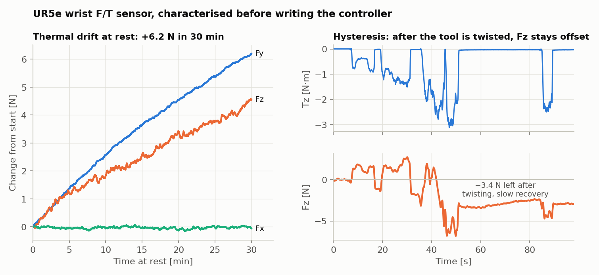
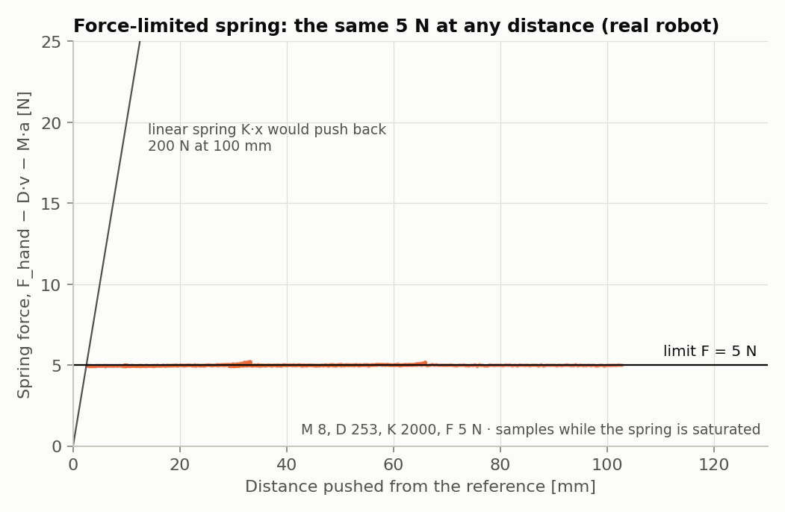
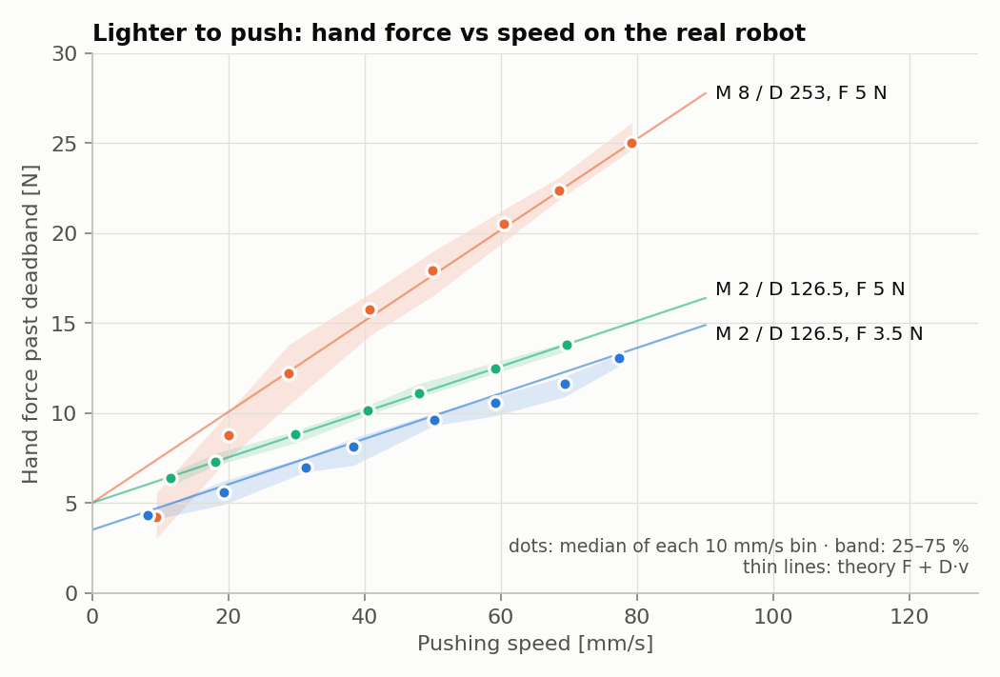
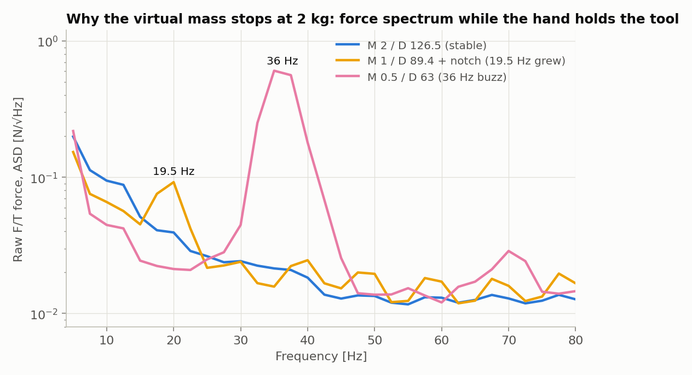
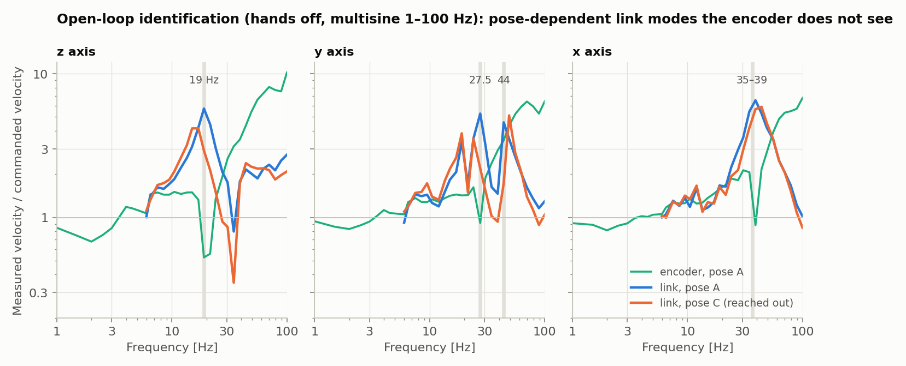
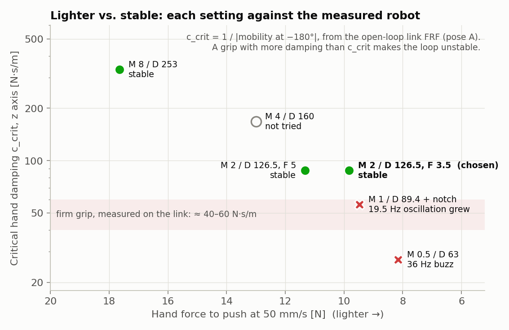
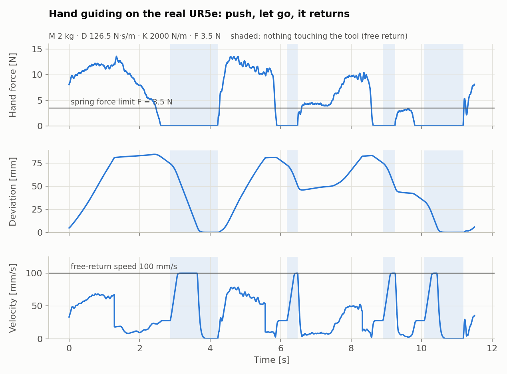
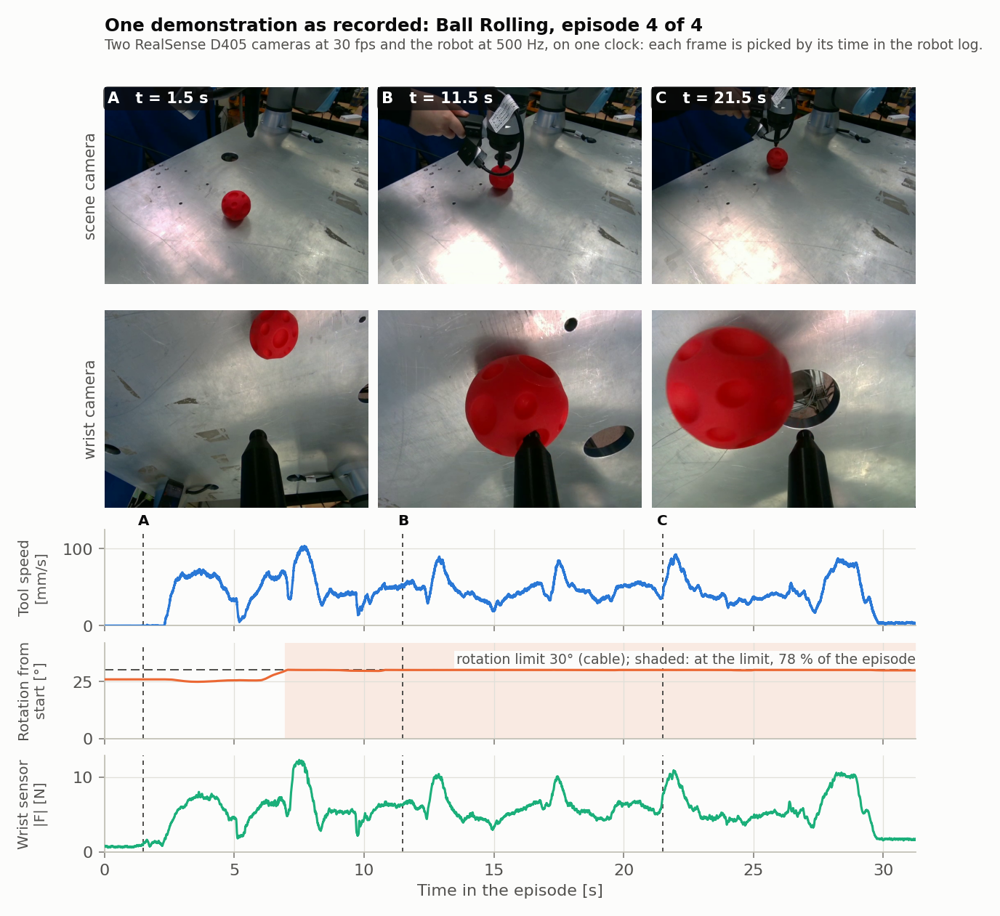

Robot control · Real-robot experiments
Hand-guiding admittance control for a UR5e
A 500 Hz controller that lets a person push a UR5e around by its tool, using only the robot's built-in wrist force/torque sensor. I measured the sensor before designing the controller, tuned it on the real robot, and when lighter settings became unstable, designed an open-loop identification that showed why. It is the low-level compliance layer for a force-aware vision-language-action (VLA) policy: the policy moves the reference, and admittance handles contact.
Highlight, 95 s. All robot footage is a 3D replay of logged real-robot runs: measured joint angles, hand force and controller state, at 1× speed. Or push it yourself in the browser.
- Admittance control
- Discrete-time design
- System identification
- Stability analysis
- Sensor characterisation
- Real-time Python
- Safety design
- Experiments on real hardware
- Data recording pipelines
System
Everything runs on a PC over RTDE. The robot runs only speedJ; there is no custom URScript.
| Robot | UR5e, PolyScope 5.25, built-in wrist force/torque sensor |
| Software | Python 3 + numpy over ur_rtde; one control step per RTDE packet |
| Testing | Offline closed-loop simulation tests, then URSim, then the real robot. Each new feature, switched off, was checked against the previous commit: identical commands over 41,000 cycles. |
| Tools | Sensor loggers and drift/hysteresis analysis; a browser GUI with a live F/T plot and 3D robot view; a data-collection GUI with live cameras and an episode table; open-loop identification and tap tests; the figure and video scripts for this page. |
1Know the sensor first
The deadbands and the re-zero logic come from these measurements, not from guesses.

- Thermal drift. At rest, Fy rose 6.2 N in 30 minutes. Divided by the damping, a bias is a creep velocity, so it sets how often the controller must re-zero.
- Noise is not isotropic. Fz noise is 2.5–4× Fx at every frequency, so the deadband is an ellipsoid per sensor axis (0.75 / 0.75 / 1.75 N), shrunk continuously so there is no jump at its edge.
- Hysteresis. After a twist, Fz stays 1–3.4 N off for minutes. Pressing with 18 N does not do this.
- Hands-off hold and re-zero. After a long session the arm crept 78 mm in 150 s. The controller now detects "hands off" from the force variance, holds the arm and absorbs the leftover bias. Replaying the same log, the creep falls to about 1 mm.
- A library bug. On PolyScope 5.25,
ur_rtde1.6.3 returns other data for three fields. I confirmed it by parsing the RTDE stream directly; 1.6.5 reads them correctly.
2Controller design
Push the tool and the arm moves like a light mass on a damper. Let go and a capped spring pulls it back.
Hand guiding with the final setting (replay of a real-robot log, 30 s).
- Deviation coordinates. The admittance is solved for the deviation from a reference xref(t), so damping acts only on the deviation and the arm follows a moving reference without lag: 0.04 mm error at 20 mm/s, against 2.5–5.2 mm when the spring acts on the absolute pose.
- Exact discretisation. The loop integrates the admittance with a zero-order hold (matrix exponential) and sends the exact average velocity over each cycle. Semi-implicit Euler moved the damping pole by 7 % at M 2 kg and 39 % at 0.25 kg.
- Force-limited spring. sat(K Δx): linear near the reference, constant beyond. When something blocks the way back, the arm presses with about 5–6 N instead of K·x (78 N in a URSim wall test).
- Free return. When nothing has touched the tool for 0.3 s, the arm returns at 100 mm/s instead of 28 mm/s; a touch restores the limit within 3 cycles.
- IK on the PC. Damped least squares, damped only near singularities. In URSim the arm crossed the wrist singularity without a protective stop.
- A "66 ms lag" turned out to be the pendant speed slider at 50 %. The controller now reads the speed scaling every cycle.


Safety layers
- Height floor with a braking-distance speed limit: 0.09–0.14 mm past it at 12–70 mm/s.
- Workspace box and a 30° rotation limit for the cable (replay).
- Acceleration limit fed back into the controller state. Without the feedback the joint limit chattered at 35 Hz.
- Watchdog and stops on packet loss, safety mode and implausible wrench values.
3Making it lighter, and finding where it breaks
The hand feels deadband + F + D·v + M·v̇. Lighter means a smaller D, and keeping critical damping means a smaller M too.

Below M 2 kg it failed on the robot in two different ways. M 0.5 kg buzzed at 36 Hz as soon as the tool was touched. M 1 kg with a 36 Hz notch removed the buzz, but under a long, firm grip a 19.5 Hz oscillation grew slowly.

The same long grip, before (M 1 + notch) and after (M 2). The 15–25 Hz force grows about 4× before and stays flat after.
Open-loop identification
A rigid "2 cycles + 8 ms" robot model predicted neither failure. Estimating the robot's response from
hand-guiding logs was biased, because the hand closes the loop (coherence 0.33–0.5 at 17–28 Hz). So I designed an
open-loop test: hands off, a 34-line multisine from 1 to 100 Hz added to speedJ, the arm within 0.51 mm of
its start, and the tool accelerometer measuring the link itself.

From the measured link response, each setting gets a critical hand damping ccrit = 1 / |mobility at −180°|. A firm grip measured on the link is about 40–60 N·s/m.

The margin matches every real-robot outcome: M 2 has about 2× margin and was stable; M 1 + notch sits inside the grip band and oscillated; M 0.5 is below it and buzzed. So I kept M 2 kg and made the arm lighter with the force limit instead (5 → 3.5 N), which does not affect this margin.
4Try it: push the robot
The same controller, running at 500 Hz in your browser against a model of this robot fitted to the identification above. Grab the robot and push it in any direction, then let go. Drag the background to look around.
Controller setting
What to try
- Push at a steady speed with M 8, then with M 2. At 50 mm/s the hand force drops from about 18 N to 11 N (on the robot: 17.8 → 9.7 N). You push in the plane of the screen: turn the view (or use Side, Front, Top) to push in another direction.
- Let go. The capped spring pulls back at F/D, and after 0.3 s untouched the arm returns at 100 mm/s.
- Pick M 0.5, or M 1 + notch with a firm grip, and hold still. The force trace turns into a thick band: the grip and the link mode close an unstable loop. M 2 stays quiet even with the firmest grip.
What is simulated
Not a recording. Each 2 ms cycle runs the robot code's steps for the tool position in x, y and z (orientation held): 15 Hz filter, deadband, exact zero-order-hold admittance, capped spring with free return, speed and acceleration limits, workspace box. The robot is the measured link response at pose A, fitted per axis with one mode (z 18.9 Hz, y 27.1 Hz, x 39.7 Hz) behind an 8 ms delay; it reproduces the measured ccrit of all four settings within 25 % (z, the weakest axis: within 15 %). The arm is drawn from the official UR5e meshes, posed by inverse kinematics. Your hand is a spring and damper around the cursor (0.8–2.5 kN/m, 5–60 N·s/m). In this model the vertical mode is the weakest, so unstable settings oscillate at about 15 Hz; on the robot, M 0.5 buzzed at 36 Hz.
5Results on the real robot

| First tuning | Final | |
|---|---|---|
| Setting | M 8 / D 253 / K 2000 / F 5 N | M 2 / D 126.5 / K 2000 / F 3.5 N |
| Hand force at 40–60 mm/s | 17.8 N | 9.7 N |
| Return to within 1 mm after release | 0.9–1.6 s | 0.3–1.4 s |
| Return blocked by a palm | — | 4.9–6.3 N peak |
| Long firm grip, 15–25 Hz force | — | 0.06–0.15 N, not growing |
| Missed packets / protective stops | 0 / 0 | 0 / 0 |
6Building on it: recording and replaying demonstrations
The controller is the base for collecting human demonstrations and replaying their forces on the robot. These parts are newer; each is marked with how far it has been tested.
First collection session on the real robot
On 12 November I recorded a first small dataset with the whole pipeline. The task: guide the arm by its handle and roll a ball across the table with the tool tip ("Move the red ball to the hole"). My collection GUI starts the 500 Hz teaching controller, shows both cameras and the loop's health live, and saves each episode to its own folder: the robot log, colour and depth video from each camera, and the task and instruction.
The collection GUI recording episode 4: a screen recording at 1× (42 s). Space starts and stops an episode; the cameras and the files are written in other processes, so the next episode can start right away. Robot IP and dataset path are blurred.

| First session, 12 Nov 2026 | |
|---|---|
| Episodes | 4, 26.6–36.3 s each (129 s) |
| Robot log | 64,473 rows at 500 Hz, 0 dropped |
| Cameras | 2 × RealSense D405, colour + depth, 640 × 480 at 30 fps: no gaps except 3 single-frame drops (wrist camera, episode 4) |
| Hand-guided speed | 39–44 mm/s mean, 103–112 mm/s peak |
| Tool at the 30° rotation limit | 62–86 % of each episode |
| Loop over the whole session | 11.6 min with the GUI, both cameras and a screen recorder running: compute 1.39 ms median, 1.96 ms at the 99.9th percentile; 13 missed packets |
- The rotation limit shaped the demonstrations. Pushing the ball tilts the tool, and the tilt built up over the session: the episodes started 10°, 21°, 29° and 26° from the run's start pose. For most of each episode the tool sat at the 30° cable limit. Next: re-centre the limit at each episode start.
- Motion only, for now. With only the built-in sensor, the hand on the handle and the ball under the tool load the same sensor, so these episodes record the motion and the summed force, not the contact force. Each file marks its contact force as invalid; separating them needs the external F/T sensor.
- The recorder still costs the loop something. The tuning runs had no missed packets; this session had 13: 3 at start-up, 5 as the first recording started, and 5 spread over the session. The burst at the first recording is the next thing to trace.
The parts, and how far each is tested
Force replay
Replays a recorded pose and wrench with force feed-forward in the admittance. Against a 5 kN/m virtual wall the force error on a 10 N/s ramp was −0.19 N, against +4.22 N for the virtual-target method (exactly D·Ḟ/K). Stiff contact needs ke/D ≤ 50 rad/s: at 50 kN/m, D 600 oscillated at 17 Hz and D 1000 was stable.
Handle teaching recorder
Moved the compliance centre to the grasp point, estimated from the F/T sensor: a twist now slides it 0.1–1.5 mm instead of 22–69 mm. Traced 25–31 Hz bursts in fast wrist rotation to the control loop (pendant freedrive stayed quiet) and removed them with a rotation-only low-pass (41 → 1 strong windows). Added an elbow guard after tracing a protective stop to the elbow crossing a safety plane.
Synchronised recording
Robot state, wrench and two RealSense D405 cameras per demonstration, recorded next to the 2 ms loop. Cameras and file export run in their own processes, after I traced loop stalls of up to 12 ms to the writer thread holding the GIL. Camera-to-robot timing, checked from motion: −0.1 ms (SE 3.7 ms). Used for the first session above.
Collision guard
Keeps the tool clear of the robot's links, the table and the safety planes, using convex pieces of the UR meshes and the tool CAD. MuJoCo distance queries, with my own GJK fallback where MuJoCo returned false zeros, run in a separate process (about 50 µs inside the loop). No false alarms on 15,747 logged poses.
7Limitations and next steps
- Variable impedance. A policy that changes K online injects energy (½ ΔK Δx²). That needs a passivity mechanism such as an energy tank; the analysis here covers fixed gains only.
- Gripper and external sensor. Not mounted yet. The gripper mass shows up in the measured force, so the deadbands, identification and margins have to be measured again with it. Until the external sensor is on, demonstrations record motion only.
- Coverage. Identification was done at two poses, and contact with real stiff surfaces is still to be tested.
- Next: a reference that interpolates policy targets, then a second arm.